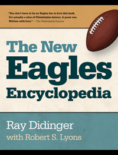

The best-selling book on the Philadelphia Eagles, completely updated and expanded
The best-selling book on the Philadelphia Eagles, completely updated and expanded


 The best-selling book on the Philadelphia Eagles, completely updated and expanded
The best-selling book on the Philadelphia Eagles, completely updated and expanded

|  |
The New Eagles EncyclopediaRay Didinger with Robert S. Lyonscloth EAN: 978-1-43991-211-9 (ISBN: 1-4399-1211-4) |
"[A] masterwork... vastly entertaining...the most readable history of the team ever done."
—Philadelphia Inquirer"This is the definitive book for any Eagles fan."
—Philadelphia Daily News
While much has changed in the decade since the original publication of The Eagles Encyclopedia, the passion of Eagles fans has only grown stronger. That's why author Ray Didinger revised, updated, and expanded his history of the team with The New Eagles Encyclopedia.
Didinger presents a year-by-year history of the franchise from its inception in 1933 through the 2014 draft. Included are profiles of more than 100 players, past and present, as well as every head coach and owner, along with dozens of new photographs and stats, stats, and more stats.
The New Eagles Encyclopedia features
More player profiles, including new entries on Nick Foles, LeSean McCoy and Michael Vick
An account of the end of the Andy Reid era and the arrival of Chip Kelly
Expanded chapters on Eagles in the Hall of Fame and other milestone moments
Summaries of every post-season game
A new chapter on the Eagles-Cowboys rivalry
An essential addition to every fan's bookshelf, The New Eagles Encyclopedia is the definitive information source on the Philadelphia Eagles.
This book is not sanctioned by the NFL or its teams.
Excerpt available at www.temple.edu/tempress
"Among the things that make The New Eagles Encyclopedia a must-have for all who bleed green is the entertainingly written summaries of every playoff game � good, bad and ugly; a complete summary of Andy Reid�s tenure as head coach (his 140 wins are, by far, the most in team history); new entries on coach Chip Kelly, former quarterback Michael Vick and stars Nick Foles and LeSean McCoy; a new chapter on the rivalry with the hated Dallas Cowboys; and expanded, feel-good chapters on hall of fame Eagles and milestone moments in team history, both good and controversial.... The photos are a treat too.... The New Eagles Encyclopedia doubles as the ultimate fan argument-settler, and a soothing balm for after those inevitable losses to remind you that things will get better."
—Bucks County Local News
"Didinger isn't just one of the most knowledgeable pro football experts on this planet, he's one of the game's very best writers.... That explains the effortless lilt and flow of the prose in a tome of 440 pages. It concentrates not as much on games as on people, a lot of good and interesting people the author knows well.... For not just Eagles fans but anyone looking for a great read."
—Patriot-News
Praise for the First Edition
"The Eagles Encyclopedia is terrific precisely because it couldn't be any more about sports or football. Written by two of the biggest Eagles experts around, EE is loaded with stats, team history, informative profiles, and plenty of trivia (including the fact that the 1980 Birds were the first team in NFL history to receive a papal blessing). If you don't care about the Eagles, stay away—you'll find no lessons about the human condition here. But if the Birds make your life worth living, this is a great way to fill those stretches between football Sundays."
—Jack Corcoran, Philadelphia Magazine
"Whether it's the birth of the Eagles, the profiles of the players, or the history of the stadiums, it's all a joy to read and full of anything you ever wanted to know about the Eagles—and then some."
—The Camden Courier-Post
"No true Eagles fan should be without it."
—KYW's Bill Campbell
Preface
Acknowledgments
1. Professional Football in Philadelphia: The Early Years
2. Bert Bell and the Birth of the Eagles
3. Player Profiles
4. The Coaches
5. The Front Office
6. The Golden Years: 1948�49, 1960, 1980
7. The Andy Reid Era
8. The Postseason
9. The Hall of Fame
10. The Stadiums
11. Milestone Moments
12. Eagles Fans: Portrait in Passion
13. The Eagles-Cowboys Rivalry
14. Sidelines
Appendix A: Year-by-Year Highlights
Appendix B: Stats, Records, All-Time Roster, and Draft
Ray Didinger was the first print journalist inducted into the Philadelphia Sports Hall of Fame. As a columnist for the Philadelphia Bulletin and Philadelphia Daily News, he was named Pennsylvania Sportswriter of the Year five times. In 1995, he won the Dick McCann Award for long and distinguished reporting on pro football, and his name was added to the writers' honor roll at the Pro Football Hall of Fame. He also won six Emmy Awards as a writer and producer for NFL Films. He has authored or co-authored ten books including One Last Read: The Collected Works of the World's Slowest Sportswriter (Temple) and The Ultimate Book of Sports Movies. He is a football analyst for Comcast SportsNet in Philadelphia.
Robert S. Lyons (1939-2013) was the author of On Any Given Sunday: A Life of Bert Bell and Palestra Pandemonium: A History of the Big Five (both Temple).
Philadelphia Region
Sports
General Interest
© 2015 Temple University. All Rights Reserved. This page: http://www.temple.edu/tempress/titles/1830A_reg.html.